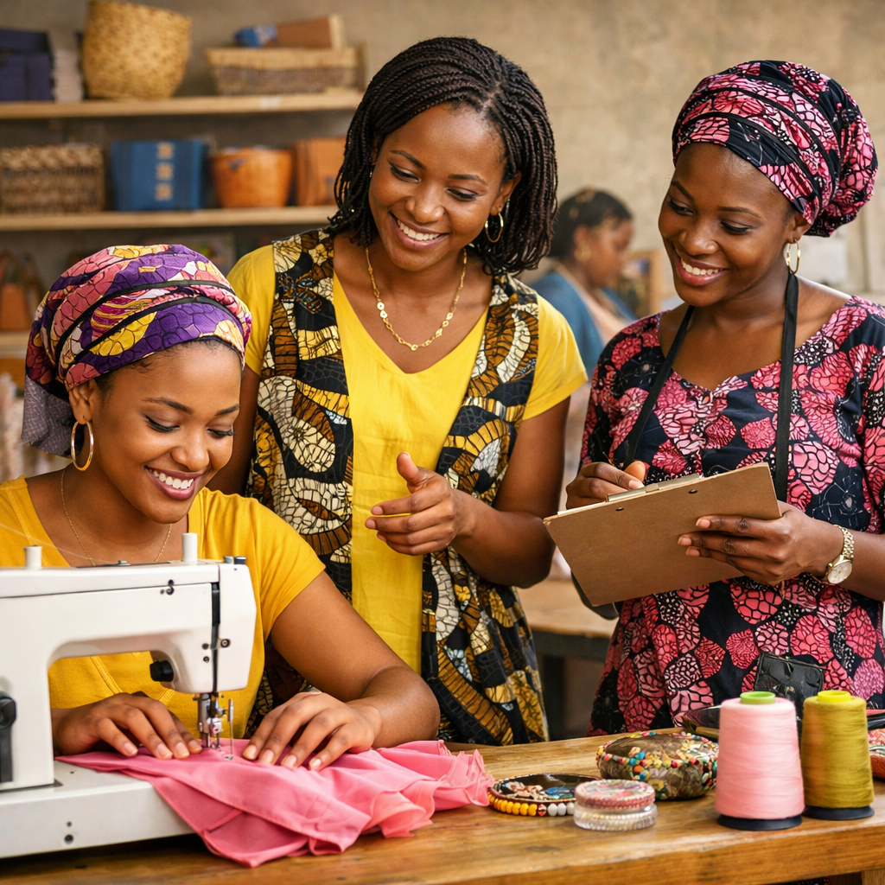
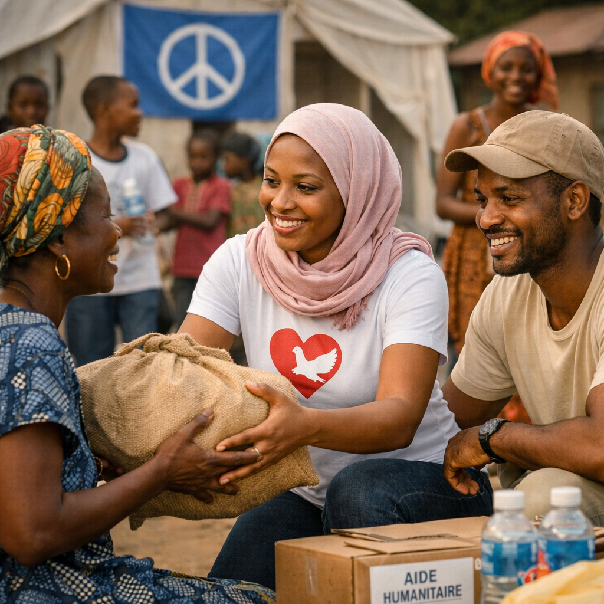

Leadership féminin – Paix – Autonomisation
Découvrir notre mission
Programmes pour renforcer les capacités économiques et sociales des femmes.
Initiatives pour promouvoir la participation des femmes dans la gouvernance.

Actions de paix et de cohésion sociale au sein des communautés.


Membres actifs
Projets nationaux
Partenariats internationaux
Participez à la promotion du leadership féminin et de la paix.
Contactez-nous